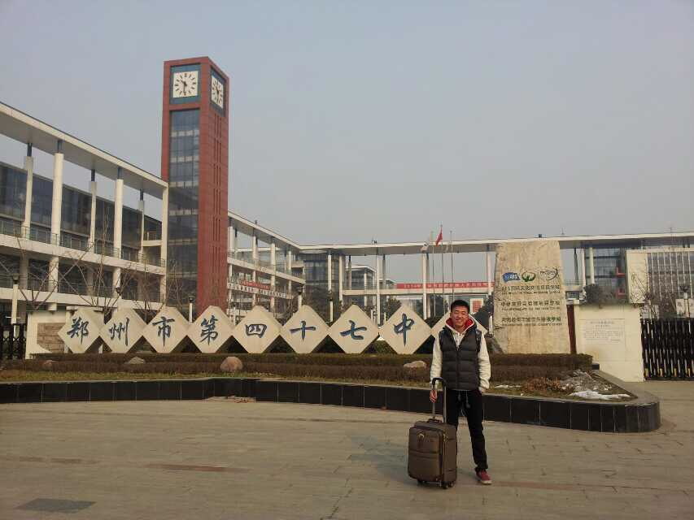
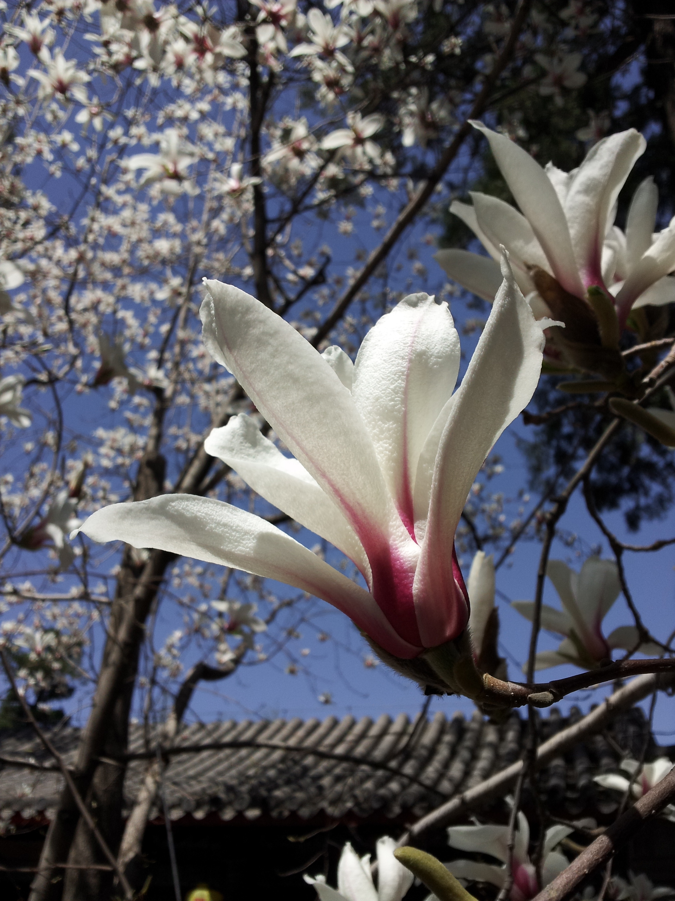
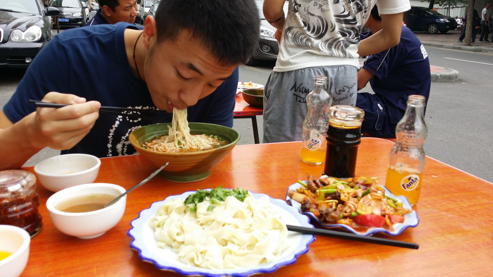
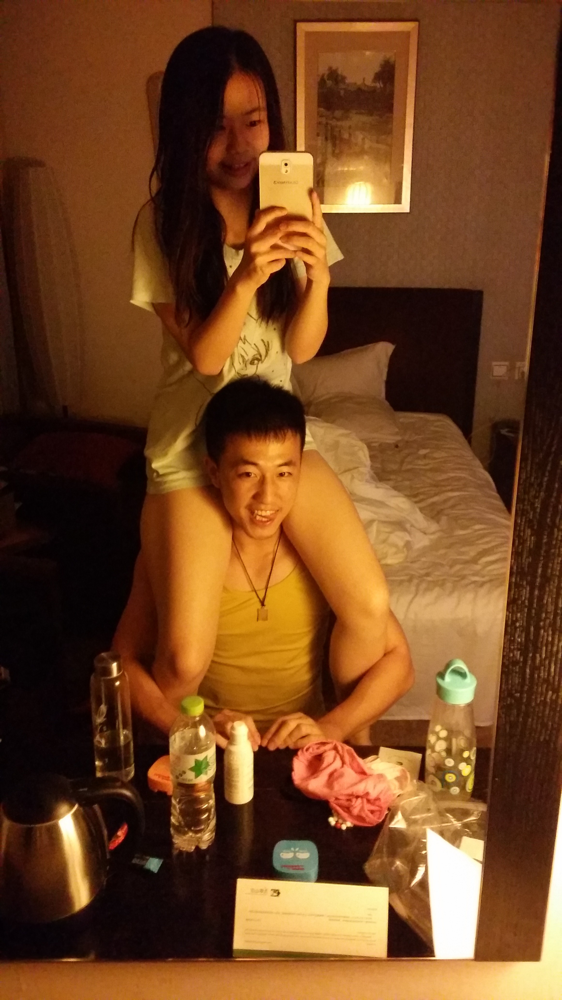
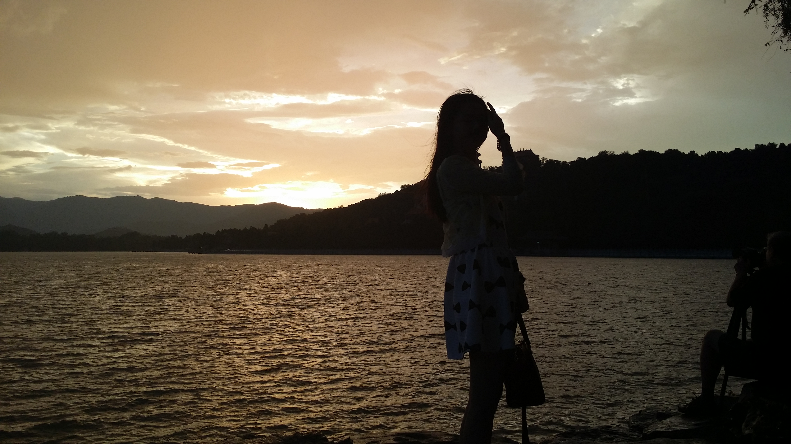

终于在一起了，好了一个假期，好像就是这个假期你去的新疆吧，我记得是，要是记错了千万别打我哈哈哈。假期总是过的很快，记得和你刚好的时候，第二天我就告诉了我们宿舍的人，他们都挺意外的，因为他们都真的以为当时只是雨果捣乱而已，记得后来你也告诉了朋爷，假期应该就没多少人知道吧。然后就是开学了，你去西站接我。说起来其实挺搞笑的，我有了女朋友，可是我之前都没有和女朋友一块去吃过饭，玩一玩什么的，你当时说要去西站接我，我还是挺开心的，那应该是你一次去西站接我吧，也是唯一一次。我还记得我当时出站后的心情，我记得当时我让你在麦当劳等我，我下了火车，穿着我的黑裤子，VANS的板鞋，上边白色的连帽卫衣和羽绒马甲，背的是我耐克的双肩包，拉着一个箱子，穿过曲曲折折的小路，到麦当劳去找你。我记得当时见到你的第一面，那叫一个尴尬，感觉都没有什么话说，巨尴尬，我只好赶紧说，我去买点吃的，然后我就去了 ，全程我都在想怎么这么尴尬特么的哈哈哈哈。后来回去就好多了，我记得你那天没什么时间，我们后来好像就走了。
第一次和你出去玩，不对，应该是约会，就是情人节那天，我记得当时，我们先是在西单吃饭，吃的避风塘，虽然当时我还是那么的拘束，感觉两个人在一起了，却没有以前那么开放了，嘻嘻，吃完饭以后，我记得我们两个人，从西单，沿着长安街一直走，走过天安门，走过中南海，走了好久好久，那天的阳光特别好，和你有说不完的话，就这样一路走到了王府井，这是我第二次来王府井，第一次是大一入学的时候我爸来送我，说起这个地方，真的是有我们两个人无数的回忆呀。和你第一次到王府井，我进的我们去的APM,我们在那个楼上卖饮料的地方，买了两杯饮料，聊了会，后来你说，那边有个forever 21，你想去看看，当时我真的是，有种土逼进村的感觉，我以为商场里东西都特别贵，总是听别人给我灌输富美璐的印象，我以为里边的东西都特别特别贵，所以为了不露怯，我说你去吧，我在这等你，哈哈哈哈，想想就觉得自己机智当时，后来等了你一会，你回来，应该是买了一顶小帽子还是丝巾之类的吧，在一个黄色的袋子里装着，本来想找你看电影的，你说你还要回家，所以就那天就没看，对了，你那天提着的那个包，就是我最喜欢的那个，我说绿色你说黄色的那个，可能是先入为主吧，你那么多包里，我对他情有独钟，可能就是因为，你和我第一次出来的时候，背的就这这个包吧。
我记得当时情人节出的一部电影，北京爱情故事，我情人节那天就特别想让你陪我看，那天没看成，开学以后我还是总惦记着，终于在一个周三，我如愿以偿了。怎么说呢，其实我不是对这个电影特别有想法，高三的时候，在我一根弦崩了好久好久，身心疲惫的时候，我就看了北京爱情故事这部剧，当时我记得自己拿了一个 不过三分之一6plus屏幕的mp4，就这样一集一集看完了，当时还特别喜欢沈冰，就是佟丽娅啦，所以就特别想让你陪我看，好在最后终于实现了，后来我才知道，你不喜欢看国产的电影，尤其是这种题材的。记得当时，我们买了一杯饮料，我说你喝吧，我不渴，其实我是不好意思和你用一个吸管，后来你还是主动让我喝了，很小的一个举动，在那时候就能温暖我的整个心，后来你说你手冷，我又不傻，就想和你暖手，可是你知道我有多害羞么当时，我盯着你的手，看了足足几分钟，最后不知道鼓起了多大的勇气，感觉手伸出去的时候，感觉身体都在抖，真的是紧张死了，最后还是拉到了你的手，当时的感觉，幸福。
记不清是不是那一次了，应该是之后有一次吧，咱俩晚上不知道去哪里玩，后来回来晚了，当时阿姨已经把门锁了，当时好多人的电话都打不通，好不容易打通了荔枝的电话，她竟然拒绝了你，当时给我的心灵撞击，真的是，女生都是这样的？记得自己当时身上装了七八百块钱，真的，我刚和你在一起的那个学期，出门少于500块钱现金，我都不敢出去，想着和你找个地方住，可是毕竟刚刚在一次，又怕你乱想，忍了好久还是说要不找个地方住，一开始我想你住我回学校，后来想扔你自己在那也太不安全了，就说你睡我睡地上沙发什么的都行，你说不要，我也没再说什么，就这样，我们俩在麦当劳窝了一夜，我记得你还带着隐形，我问你会不会有事，你总说眼睛干，不舒服，不过还是告诉我，没关系啦，一夜很长，我们还是坚持到了天亮，初春的夜晚，刮着风，冷冷的，我记得你还穿着那个黑色羽绒服，你让我一只胳膊抱着你走，这样你会暖和点，走到那条路中间的时候，我们停下来，我第一次抱了你，仿佛我现在还记得你当时那件黑色羽绒服上的纹路，一如既往的紧张，就像我第一次牵你的手一样，那种年龄青春萌动的感觉，我想我以后再也体会不到了。
那天和你发了我吐舌头的照片，知道你晚上睡觉你也没有回我，后来我问你，你说你忘了，我想，大概就是你根本记不起来还有郭冬冬这个人吧，怎么说呢，听伤心的，之后几天你也没找我，我的所有动态，票圈，微博，ins，你通通装作没有看到，哪怕只是点个赞，是的，我的确很在乎你，但是你这样做，只会让我的心慢慢的凉下去，那天我说你自己作吧，到时候别后悔就行，每当我觉得自己对你太在意，你却对我无所谓时，我就会去寻找一个自我调整的方式，或许这样下去，我真的会再找一个女朋友吧。昨天在宿舍坐着无聊，突然脑海里就蹦出了暮光之城几个字，我就不犹豫直接看完了，从Twilight,到new moon，再到eclipse，到最后的breaking dawn，突然觉得，挺符合我们现在的状态的，于是就把她当作我这篇礼物的小标题，第一部就写我们认识之前的故事，new moon是我们在一起以后的事情，eclipse当然就是现在了，等你回来，如果我们还能在一起的话，那就是我们的breaking dawn了吧，至少我现在还相信，我们会迎来我们的破晓的。
说点什么呢，记得我刚和你在一起的时候，用一句话来形容我的心情，那就是战战兢兢，如履薄冰。的确是呀，当时你答应和我在一起的时候我是有点出乎意料，但当时不是因为我们自己两个人的问题，可能是超过我们本事的原因吧。但是我和你好的那刻起，我记得我和室友说过，下一次我再谈恋爱，就是要结婚了，我真的是这么想的呀。可是那时候我就知道，结婚不光是两个人呢的事呀，更是两个家庭的事，所以我才会说出那种不负责任的话，给自己留一个借口，也给你留一个借口，那就是毕业的时候，如果我不够好的话，那么我们就分开吧。现在想想也是挺可笑的，多么幼稚的话呀，已经毕业了，我还没有足够好，可是我还是没有和你分开，虽然可能也不太远了。跑题了跑题了，这个章节说的，都应该事一些甜蜜的事。对了，尹璐，你知道么，我和你好的那刻起，我就知道，这是我这辈子，在我这个美好的年纪，遇到的最后一个人了，我会以一个学生的身份，在最美好的大学时光里，用尽我全身的力气，让你成为最幸福的女朋友，这也是我和一在一起以后的第一宗旨，指引着我和你在爱情的路上，越走越远。
开学不久就是你的生日了，20岁，多么美好的年纪。我从来不是一个爱送礼物的人，没有心意的拿不出手，值得我花心思的人，却又寥寥无几，但是至少当时，我想送你一个，能让你记住一辈子的礼物。大概是二月底吧，跟着次差不多，我就开始想送你什么礼物了，只是这两次的心境已经完全不同了。当时先是在淘宝上找，找了好久都没有合适的，之前还想过送你一个永生花，后来想想觉得挺没意思的，突然有一天，偶然看到了手工制作的房子，当时就觉得这个好适合自己，我一向不怕动手去做些什么，当晚就找了好多家店子，最后决定了那个爱琴海的小房子，说是小，已经是卖的最复杂的了，可是我就是那么有信心，我相信自己能在半个多月时间里做好，然后送给你。刚开始的时候，看着那一地零零散散的小组件，那厚厚的一摞的说明书，自己心里的感觉不是畏惧和害怕，而是迫不及待想要把它完成。在那之后半个月，我没有怎么动过电脑，除了上课，和你出去，回到宿舍的唯一一件事，就是做那个房子，看着她从一块块木板，搭成房子的样子，从四周的墙，到那个蓝色屋顶，到一层的地板，二层的窗户，真的是挺有成就感，你知道么，所有的椅子沙发，都是我一条腿一条腿拼出来的，床上的被子，沙发上的枕头，里边的海绵，都是我一针一线缝进去的，记得临近你生日的那几天，有个周六你回家了，我从早上八点，一直做到晚上十点，可是我一点都不累，我脑海里想的，全是你收到礼物时候，你脸上的微笑，因为我知道，只要你心里认可了我的礼物，我再多的付出都是值得的，还记得你当时说，“你就是上天送给我第二个十年最好的礼物”，每次看到这句话，能能温暖好一阵子。

记得那时候，你去蓝旗营上gre，你每天七点多起来去上课，我就十一点出门，等你十一点半下课了刚好记得你。我记得当时你夸我的帽衫和裤子好看，我记得你常常穿着那件在东方新天地IT买的那件黄色外套走出学校的身影和你每天背的那个蓝色碎花的书包，我记得当时在门口等你时看着大爷们下象棋的场景，我记得有次我去帮你上课，录了四个小时音到最后你也没听和那个写作老师的“很优秀”。你上了两三月的课，我们真的是没少在五道口吃，记得你当时还发了qq空间呢，反正我记得我吃的最多的就是庆丰的早餐哈哈。说实话，认识你之前，我对吃这个东西，从来没有什么奢求，没有说特别想吃什么什么，可是和你在一起以后，我回过头来想想，我真的变了好多，和之前的我，不光 是吃的方面，我的这些变化有些是我喜欢的，有些是不那么喜欢的，后边在慢慢说吧。我记得当时每次中午和你在五道口吃，我们吃明洞排骨，吃杨国福麻辣烫，吃俺朋来炸猪排，吃萨莉亚，吃黄记煌....我记得那时候你最喜欢在肯德基上卫生间，我还说那是我们的专用卫生间哈哈哈。记得我们有次路过，枣糕王的旁边开了一个什么叔叔的芝士蛋糕，开业优惠买一送一，你说你特别想吃，可是他们周一还是周二开业，应该是周一有课吧早上，周二是十点的课，我那天就六点多起来，七点多点出门吧，我记得到的时候还不到八点了，人挺多的，就在那排队，他们九点才陆陆续续做出来，还好我比较靠前，终于在等了快两个小时的时候买到了蛋糕，当时想想自己，怎么这么呆呆傻傻的，后来心里有个声音告诉自己，可能自己这辈子都不想现在，有这样的时间和精力对一个人这么好了，而这正是我想对你做的，想通了变更加的义无反顾了，我就是想让你吃到，至今我还记得，当时我到教室坐在你身边把蛋糕给你时你惊讶的表情，我记得是个小教室，还想是周新丽的物联网？记不太清了，也不重要，那时候的自己，真的是想用尽全身的力气，只对你一个人好。
记得和你在一起以后，很久很久都没有和你生过气，因为我一直都是如履薄冰的状态呀，生怕哪里做的不好惹你不开心。可是我记得，有次，我好像真的有点不开心了，那应该是在小花园吧，我们好像有一天下午没事，坐在那里聊天，不知怎么滴，聊着聊着就说到了的前男友。应该是从中山大学那个扯开的话题吧，你讲了你的高中，你的初中，你的小学。。。这种东西我一般都记得不清，一是根本没有什么需要记得意义，也是因为当时的的确确让我不开心了吧，记得你当时讲的兴起，我在那默默的听，心如刀绞，其实现在回想起来，也没什么呀，真的是没什么，可是在那个时候，就是那么让我，难以释怀。可能那个内心小气爱吃醋，是我的本性吧，这种东西，真的是好难改，我可以做到不让你知道，表面上装作一副无所谓的样子，可是只有我自己才知道，自己内心深处的想法，骗别人容易，骗自己，太难了。如果我有一天真的做到了不那么在乎你了，可能，是出现了另一个让我在乎的人吧。
还是继续说事吧，给你写这个，也没有提纲可以列，而且也不是一气呵成，只能想到什么写什么啦，我尽量按照时间的发展顺序来啦。接下里就说说志愿者吧，当时和你在一起以后，真的，那个学期，我直接把游戏戒了，想做点有意义的事，虽然我在我内心里告诉自己的，第一件事，就是毫无保留的对你好。反正就是有一个想急于改变，和你做一些有意义的事吧，刚好那阵子，屈狗负责了一个志愿者，北京田径挑战赛，我们俩就欣然的报名了。记得当时总和你在一起，从开始到结束，一起报名，一起面试，一起去，一起工作，一起吃饭...借着这次活动，对你的一些性格也有了些了解，强势，不能吃亏，刚好我一直是一个喜欢忍让和包容的人，为了这个性格，咱俩后来可真的是没少吵架。记得当时我们都在医疗组工作，下午去的早，大家都在鸟巢里照相，当然咱俩也不意外，穿着黄黄的志愿者衣服，像两个没有见过什么世面的小朋友，到处拍啊拍，我记得我还和一个美国的百米名将合影了呢，我记得比赛开始以后，我们两个坐在屋子里负责签到，有个奥委会的日本负责人只会我们，我们只需要她们把运动员带来屋子里以后问下他们是谁，签个到就好了。当时你英语比我好很多，但是你一直不敢张嘴去说，所以显得咱俩半斤八两，你还记得么，当时我们都说can you take it,后来有个外国的运动员告诉你说应该说tick it,你后来还专门告诉了我，记得当时有个美国女运动员，好像是百米的吧，看到一个她认识的人拿了一个挺好的成绩，当时直接说了一句，oh,fuck哈哈哈哈，那个牙买加长跑运动员，穿着一身荧光色，一个人的体味弥漫了整个房间，至今我还记得那个味道。我还记得我们两个人在没人的时候，在房间里自拍，那时和你在一起的时光，真的是纯粹，开心。
对不起对不起对不起baby，刚才忍不住又给你发微信了，你好久不理我，我每天都在写，我不想我的坏心情，导致我给你写的东西都弥漫着一股不开心，所以就给你发了微信，虽然你态度不是很好，而且你在上课，所以我心情已经没有那么糟了，所以就继续疯狂码字啦。
接下来就是我们的天津之旅啦。那是我第一次去天津，和你一起，说真的，我挺喜欢天津那个城市的。我记得我们去玩了挺多天的，发生了好多事，有开心的，有不开心的，而且我还….对不起啦，我会对你负责任的嘻嘻嘻。第一次去天津，我就像一个外地旅客一样，跟着你，去熟悉你生活了快二十年的地方，我永远是那么在意细节，我记得你带我去你们学校门口吃你以前常和同学一块吃的砂锅，鸡排，带我吃你常买面包店子里的拿破仑，记得你带我吃你高中时特别爱吃的板面，还有和同学常去北京没有的火锅彤德莱....我记得当时你带我五大道，告诉我你奶奶家就在那边，我们俩穿梭在天津的各个大道上，看的周围的建筑，我当时真的萌生了在这个城市生活的想法，至少我觉得，会比北京生活的舒服。和你在五大道那块的铜马照相，在那个意大利风格的小广场散步，当时你骑上那个自行车，在我心里，你就是我的奥黛丽赫本。我记得我们漫步时在路旁吃的绵绵冰，我记得我们住在七天楼下打扑克能打出王者风范的大爷们，我记得在彤德莱光着膀子喝着白酒大爷们的桀骜民风，你告诉我天津人说时间的时候，那个上扬的五点一刻。我记得当时你带我去逛街，我们在那个教堂前驻足留影，我们去大悦城的游戏厅投篮，还破了他们的记录，我记得当时你告诉我你曾经特别爱吃耳朵眼炸糕，我记得当时你陪我逛了一个又一个店子最后买了双红色的neo板鞋…我记得你当时带我去你常去的文具店，送了我一条我带了好久好久掉色了都舍不得扔掉的脚绳，我们在文具店外边，我拿着蓝瓶的雪碧，笑着你给我拍照，真的就像昨天一样。第一次去天津，开心。

第一个学期就差不多这样结束了，感觉这学期我们的节奏就是吃吃吃，吃完校门口吃西苑，吃完西苑吃中关村，吃完中关村吃万柳，吃完万柳吃五道口，吃完五道口吃西单，吃完西单吃王府井，总之就是吃吃吃浪浪浪，感觉一个学期出去吃的饭，是我上三个学期的三倍，嘻嘻嘻，不过有你陪着我，去哪我都开心。然后我记得学期快结束的时候，因为同样的理由，我们一起饱了APEC的志愿者，记得当时你还特别自信地问我，万一你面试过了，我没过怎么办，你对我就这么没有信心呀，不过说实话，我都没什么底，所以面试完以后我就特别关心面试的结果，后来问问好像挺多人都不去了，所以基本就是1:1的面试比例了，当最终名单出来时，看到我们两个的名字，就长舒了一口气，就这样，我们开始我们的志愿者之旅，应该算是我们回忆里还算精彩的一个章节吧。
就先从培训开始吧，记得当时我们是在一个挺远的一个什么山庄培训，好像是七月底吧，我们就一起过去了。当时我们在一个大教室里边培训，住的话我和屈狗一个屋，你和于兴艺师姐一个屋。记得当时培训的时候，就是整天上课，好像也没有什么印象特别深刻的事情，喔对了，你还记得那个凶凶的礼仪阿姨么，后来联系团队协作项目的时候，我和你不知道因为啥还吵架了呢，后来需要八个人站到一块地板上，你还去了别了组好像，原谅我这个小气鬼的毛病哈哈哈这种事记得倍儿清楚。要是还有别的什么的话，那就是伙食特别好，每天自助加水果，感觉我在那胖了好多呢，我还记得有一天晚上，你偷偷跑过来，我抱着你，跟屈狗一个房间睡了一晚上，现在想想感觉好羞羞呀，不过那可能就是热恋吧。
时间过得很快，转眼我们就投入了紧张的志愿者工作，当时我们在会务组，一共四个岗，ABCD，当时你我国良还有陶情一个组，陶情是组长，总感觉她装装的，我们都不是很待见她，不过国良那时候还喜欢她呢哈哈哈。记得当时有次，在有个会议室，是一个印度的pd，那天你是B，我是C，国良是A，后来会议开始前，国良跟PD交流了好久，貌似都没有听懂PD在说什么，你告诉我说，赶紧去救救场子，当时我感觉我还是比你敢张嘴的，然后我就成了那天的A岗，那天还挺自豪呢。后来好像还是在那个会议室，有一次我们好像不知道因为什么闹了点小矛盾，可能是工作态度吧，记得当时我们没少因为这事生气，当时主要的分歧就是，你觉得什么事做的差不多就好了，别人都怎么怎么样，但是我是那种我吃再多亏我都不会抱怨的人，怎么说呢，各有各的好处，也不能分对错，而且受你影响，我有时候在别的地方工作或者什么都，也会有那种消极怠工的情况，哈哈，怎么感觉我在说自己不学好，还是那天的事，我和陶情好像拍了一个宣传照，还上了北京青年报，后来你吃了一个大醋，跟我好一阵生气呢。我记得当时你每天从牛街坐公交车过来，好像是2路吧，所以那时候常常送你而错过学校的班车，就那样，我对王府井到西苑的地铁了如指掌，你知道么，其实最近的不是1号线西单换成，而是到复兴门换成二号线然后坐到西直门换四号线。我记得当时你爱吃吴裕泰的抹茶冰淇淋，我就常带你吃，有次还在王府井百货买了那个你穿了好久那个特别好看的带蝴蝶结的凉鞋。记得当时你穿的那个小皮鞋，总把你的脚皮磨破，经常流血，我就陪你去热风买垫脚的小垫子。我记得当时当时在安华城每天吃自助的时候你总会帮我拿酸奶，我记得当时我们在17楼值班室鸟瞰故宫的美景全貌，我记得那个会在茶歇时候你想吃马卡龙不敢拿我偷偷拿了一个塞到你的嘴里，你说吼甜急的想喝水，我记得当时会你偷偷地趴在投影设备那午休小憩....还记得那个夏天一个暴雨后放晴的黄昏，我们结伴去颐和园，那次真的是我，在北京呆了这是第五年，见过的最美的颐和园，很荣幸，很开心，能和你一起见证那美景。
感觉还是要缩减篇幅呀，才写了一个学期，都这么多了，不过还有十天呢，可是写了太多又怕你根本不想去看，我就尽量写点记忆深处深刻的东西吧，尽量每个学期一两件比较深刻有意义的事，少啰嗦两句无关紧要的东西，毕竟是你的礼物，不是我的记忆碎片嘻嘻嘻嘻。和你在一起的第一个学期，加上那个暑假吧，真的是弹指一挥间呀，很多很多美好的回忆，我想不管我最后和谁在一起，我都不会忘记这些回忆吧，因为这都是我内心深处最美好值得珍藏一辈子的东西。
接下来就大三了，还是从志愿者开始说起吧。当时暑假去的北京饭店，咱俩都感觉体会是体会到了外交上的一些场面，但是都没见过什么领导人，感觉还是一件遗憾啊。所以当学校招募APEC领导人会议周志愿者的时候，我们就屁颠屁颠的去了，后来又知道我们之前三高的那批人，连面试都省了，真的是更开心了哈哈哈，我还记得我们在一个好像叫做温都的地方培训，培训内容都是大同小异，值得一提的是我那时候和彭程住，你和温倩，有一晚我们就自然而然的换屋子啦嘻嘻。可是紧接着给我们当头棒喝的就是分给我们的岗位，竟然是酒店咨询台，我一开始还在想是因为当时我们表现的不好么，可是同组的还有尹曦璨，应该也不是呀，反正一头雾水。后来因为这个事情，我们还去和邵伟反应了反应，以为我们觉得岗位不好，还耽误上课，没啥意思，主要是你和尹曦璨，意见都挺大，我还是一副服从安排的样子，不够后来我们一块去找稍微聊的时候我还是装作很不乐意呢，最后在我们的据理力争下，终于争取到了一个国会旁边的北辰，感觉还是挺不错的。记得第一次和你去吃饭，在那个员工餐厅，我的天，真的还不如学校的食堂呢，好在后来我们还是争取到了去国会吃饭，不过话说回来，我感觉我们那段时间吃的自助，是味道最不错的呢。我记得我最爱吃羊排，炸虾排炸鱼排，当然还有你一次吃了一大盘的扇贝，反正那阵子没少吃胖。
然后聊聊我们的工作，就是在酒店撘一个咨询台，为一些代表答疑解惑，我记得最顶峰的时候就是当时日本外相和澳大利亚的外长还是总理在我们面前会晤，那阵势，哈哈哈。对了，好像还有次是哪个国家的国王来了，我们还偷偷跑出去找了好久…记得当时我们总在那拍照，我现在还会经常到你微博翻出我们当时的美拍视频，看着特别温暖。再有就是交了挺多朋友了，其实也没几个，中青旅的唐敏静，将军夫人崔姐，还有那个研究生师哥。就说说崔姐吧，抛开她少将夫人的身份不说，真的，你很难想象一个北京的少将可以获得多少资源，对崔姐这个人我是真的佩服。精通日韩两种语言，年轻时跟随体育总局访韩任翻译，妹妹病危的时候独自一人坐火车带回北京，真的是挺佩服她，我能感受她丰富的人身经历，她的随和也让和她相处的人感到很舒服，人的一生多结识一些比你优秀，比你有人生阅历的人，多和他们聊聊天，真的会收获很多。我还记得当时碰到了一个91级英文系的师哥，还和他拍了合影，真的，在那个年代的国关学生，才是真正当时有清华北大水准的吧，后来他说他还想找实习生，一开始还挺感兴趣，后来听说要去听英文回忆做笔记，瞬间感觉自己不太行，还是要学习呀。
记得当时我们总去国会溜达玩，晚上回去也要到她们那个屋子等大家坐校车，感觉真的是见了不少人呢。我就回忆回忆当初见三巨头的场景好了。第一个自然是习大大啦，当时我们在一个二楼，听说过一会习大大要从这个门进，我们就在那守株待兔，记得当时还有几个咱们学校的，就悄悄的躲在角落里，还不让漏头呢，等了大概二十分钟吧，突然一辆车停下了，当时那个激动啊，都赶紧拿起手机开始拍，然后就真的看到习大大啦，虽然当时离得的有50米远，但是感觉是第一次见到真人呀，国家领导人，我是心情贼激动，你应该也是吧。然后再说说奥巴马，记得当时美国比较任性，不坐中国为他们准备的红旗，用的自己的车，住的自己的酒店，当时记得奥巴马来的时候，我们在等班车的那个会议室，然后一帮人围着那个玻璃窗，下边是一个封闭的走廊，不过顶是玻璃的，所以能看到下边的场景，然后就是奥巴马出来了，记得当时窗台那边围了的有快二十个人，然后奥巴马一下次，一帮人不约而同的woo~~贼喜感，后来好像这个视频还被人发了出去，引起了不好的反应，说当代大学生怎么怎么样吧啦吧啦的。接下来就是最意想不到，也是观察效果最好的一次经历了，普京大帝！记得当时咱俩混到四楼还是三楼的会议室，反正就在那边闲逛，后来我正和你说着话呢，突然出现了一双大黑手，拨开了我的肩膀，让我后退，我正纳闷中带着一丝小怒意的时候，扭头一看，一大帮子人，从我的左边呼啸而来，而走在最中间的，卧槽，竟然是普京，幸福不要来的太突然哈哈哈，当时普京离我最近的时候差不多只有两米的距离，走了之后我还发了一会呆，总之给我的感觉就是，普京真他妈的有范，帅！别的领导人都从秘密通道走，就他从大门走出来，真是一个有风格的领导人。
对了，我们还一起见证了一场国家级别的烟花表演。记得当时邵伟说那天有烟花表演，我们还专门调了班到那天，等到那天下班吃完饭以后，我们就去国会他们的会议室等着，后来差不多七点吧，大家就陆陆续续成群结队的出发了。我记得当时大家一开始都在一块，走着走着就走散了，我们走了好远好远，不知道你还记不记得，他们好几个人在前边跑着，我们在中间快走，江文在后边追着我们，跑的累了，停下来一句，我擦～我现在还记得他当时的语气，超好笑，大概走了有四十分钟吧，我们终于走到了第一线，到了离鸟巢最近的位置，我们俩就在那静静着等着表演开始。差不多八点吧，烟花们就躁了起来，一个个冲上天空，漫天烟火点亮了让我们仿佛置身白昼，我就单手把你搂在怀里，静静的欣赏，真的是好漂亮呀，不过过了一会就云烟密布，pm2.5直追3000+，我们就快步逃离了现场。总感觉说起来没什么感觉，但是当时真的感觉好浪漫，我记得当时我们还让人帮我们拍了合照，你还专门洗了出来，在有次假期我在家的时候，随着你摘抄的诗一块送给了我，上个寒假我还翻开看过，真的是别有一番滋味呀。

下边就说一点真真切切实实在在你对我的改变吧，我变得喜欢和别人分享心事了。从小到大，在遇到你之前，我几乎没有和别人说过我的心事，就比如我爸妈的事，一直是我心里的禁区，从来不会和别人提起。从小我就特别怕我爸我妈吵架，小学四五年级以前吧，我们一直睡在一个屋，当时就特别害怕他们吵架打架，后来盖房子了，他们睡楼上，我睡楼下，经常一点点小动静，我就马上光着脚偷偷跑上楼趴在门外偷听，怕他们吵架，高中以前，至少我每天都在家，所以他们虽然有时会吵，但是我总会在中间当一个调和剂，所以一切都显得没有那么糟糕。可是自从我去郑州上了高中，一切好像都变了，前两年还好，就高三那年吧，我记得四五月份，有次周末我妈给我打电话，说了一堆乱七八糟的事，我就打电话和我爸吵，那天早上我自己在宿舍，放下电话我就趴到被窝里哭，嗷嗷的哭，放着声，整整哭了有一个小时，可能后来它们意识到了一点我快高考了吧，五一的时候还来学习看了看我，请我们宿舍人吃了饭，那阵子心情还挺好。可是差不多五月下旬吧，我往家里打电话，每次都是我奶奶接，我就感觉有点不对，可是我爸妈都没说，我也没有去追问，其实我心里都清楚，等考完试，回去就发现我妈已经不在家了。大学以后，在外人看来，我总是那么的大大咧咧开开心心，可是只有我自己心里清楚，我从小到大，心里总有一丝顾虑，去担心我爸我妈有没有吵架，过得好不好，每次回家，都有数不清的眼泪要流，见了我爸和我爸吵，我爸以为我向着我妈，见了我妈和我妈吵，我妈以为我向着我爸，自己夹在两个人中间，我都不知道自己是怎么挺过来的，可是我就算我心里再难受，再煎熬，我从来没有和别人说过，都是打碎牙和着血往自己肚子里咽。可是自从遇到了你，记得是在南广场吧，我把这件事和你说了，第一次，讲出了自己的心事，我已经记不起当时什么感觉了，可是我感觉那应该是一个开始吧。好在后来因为我爸生病的事，我就想通了许多，何必非要强迫他们在一起呢，我现在只求他们健健康康的过下去就好。说起来真的是挺戏剧的，爸妈办离婚手续的那天，我打球腿骨裂，我至今还记得，当时耀哥和雨果推着轮椅给我推到校门口，我妈给我打了那个电话，哭着告诉我，他和我爸离婚了，二十多年的婚姻，画上了句号，作为一个儿子，我努力了这么多年，还是屈服了，有时真的觉得，和爸妈坐在一块吃顿饭，对我来说，挺奢侈的。上次和你吵架，借着李阳分手那次，我和他们说了好多，不光说了你，还说了我爸妈的事，有些东西说出来是会好受些，这可能就是你给我带来的改变，我现在已经不排斥去告诉别人自己的心事，这对以前的我来说，概率为0，不过我现在可能也不会去说，只是心里已经没有了以前的那种排斥了。其实我自己也不清楚这样究竟好不好，我从小就觉得，一个男的，就应该顶天立地，不管受到什么苦，自己扛就好了，所以我慢慢地寻找，去寻找一个合适的临界点，我还是喜欢那个坚强的自己，为你哭这种事，真的好没出息。
这个学期就说这么多好了，然后就是大三下了吧，怎么说呢，还是要感谢你璐璐。其实当时和你在一起的时候，我就觉得自己大学有些颓废，想着和你在一起以后，自己会为了你多干一些正事，和你在一起了以后，说实话，比之前真的是好了很多，但是有时候看还是不够。这个学期应该是你激励和鞭策我的一个学期吧。我真的要先吐槽一下兼职这个东西，当时你总嫌弃我在学校闲着不去赚点外快，总催我去找实习，找兼职。当时好一阵子，都在58上找兼职，去一家一个骗子，去一家一个骗子，真的是各种被套路，还每次都跑的很远去面试，到最后我发现，这种东西真的是很不靠谱，就放弃了找兼职的想法，开始找实习，不过话说回来，我被骗的这些经历，我真的一点都不后悔我所浪费的时间，真的，你也一样，在我们这个年纪，吃的亏犯的错受的教训，都是我们宝贵的财富，是我们人生路上必定经历的东西，早点经历我觉得，真的挺好的。然后就是找实习了，我离实习最近的一次，应该就是联想那次了，去面试了两次，接下来真的就是通知我要上班了，然后腿伤了，就这样在宿舍呆了快一个月，心疼我实习，还有我的专四，我之前真的有每天做专四的题，后来全荒废了，我记得考试的时候我还是拄着拐去的。说起腿上的这件事，我还记得当时你给我送切好的水果吃，给我做寿司带过来，真的是和你在一起以后头一次感受到满满的爱，虽然是我整天告诉你小嫂子常给耀哥送水果，不过还是好开心，还有我拄着拐，你陪我去食堂，给我打饭，记得，我都记得。
还有就是，在你的不停逼迫下，我终于明确了毕业要准备什么。其实我心里一直有朦朦胧胧的答案，我知道我应该会考公务员，我知道我可能会考研，可是一切又不是那么明确，如果不是你，我可能最后还是会有决定，可是在你的催促下，我提前就想好了该做什么，并且为了这个目标去努力。虽然和你解释过好多遍，为什么没有和你一起出国的原因，我今天还是想和你在说一遍。先说客观点的吧，其实我当时真的有细细考虑过和你一起出去，我还问了我舅舅，可是当时自己绩点真的只有2.9，我英语也不是很好，当然我知道如果下了决心要去语言肯定不是障碍，这方面还是绩点影响我的层面多一点吧。还有一点就是家里边了，其实也就是我爸，因为我去了也是他给我钱。说实话，我从来没有觉得这个世界上有什么东西是天经地义的，就像我从来没有觉得花我爸的钱是理所当然的，就像我找我爸给我换个电脑还要考虑考虑时间场合，虽然我知道我爸会很痛快的答应我，我爸也常和我说，他挣的钱反正都是要给我的，前两年生病的时候，他告诉我，万一有一天他突然没了，告诉我钱都在哪，真的，就像交代自己的后事一样，当时眼泪止不住的流，说真的我从来没指望花他什么钱，用你的话说，迷之自信，我感觉我可以靠自己，不用靠他。然后就是出国这件事，怎么说呢，你父母的思想境界，和我爸他们想世界的方式是不一样的，并不是说高低之分，只是文化背景不同罢了。说实话，出国的钱，我爸出的起，而且也不是那么费劲的事，可是出趟国的钱，能在我们家买个带小院子的三层小楼了，可能是消费观的问题吧，再加上我舅舅的，我爸一直都很排斥我出国，不过这都是我自己的按照我对我爸的了解想的，我感觉应该就是这样，所以我当时就直接没和我爸提，综合很多原因吧，就放弃了出国，说心里话，我超想和你一起出国，每天生活在一起，我知道那样真的会好幸福，真的好抱歉，璐璐。可是慢慢的，我也更想出去走走看看了，可是我现在还是没想好，到底给不给自己留系统这条路，因为我感觉自己的内心，还是挺想从事这份事业的，可能我现在是个天真的小白兔，但是我感觉我进去了，我能干到部长，哈哈哈哈哈哈哈哈哈，迷之自信。

这样写感觉节奏就快了好多呢，感觉比那种事事都提一下的方式好了点。接下来就是整个大学最充实的一个学期了，用点不准确的话来说，大学四年，就认真学了一个学期。这学期的事就从暑假说起吧，因为这个学期好像都没回家，七月份就开始上公务员的培训班了。记得当时煌哥跟朋爷分手的时候，我就问你，到时我如果我整天疯狂泡图书馆，没有时间带你出去玩，陪你，你会不会和我分手，你当时很坚定的说，不会，事实证明，你说的是真的。暑假的时候，我先是在中公上课，后来又到农大上考研班，那时候你在家吧，只有周末的时候可以去找你玩，不过记得当时每次找你都玩的挺开心的。然后就开学了，你也回到了学校，我清楚的记得我九月初回家呆了六天，胖了六斤，等到我回来的时候，我们就正式开始了充实而又无聊的一个学期。我每天早上六点四十起，到图书馆占座，吃早饭，操场走两圈，回去开始练字看数学，等到差不多九点你就来了，中午十一点半去吃饭，然后我们就回去休息了，我睡到一点半回去，你大概两三点就来了，下午或者我去运动，或者带你去操场走走跑跑，吃了晚饭，六七点回图书馆，然后学到十点二十左右，送你回去。这差不多就是我们的日常生活了，可是这学期也发生了好多小插曲，都给我留下来很深刻的印象和回忆。记得刚开始的时候，我复习公务员和考研，你只看雅思，我的东西真的是好多好多看不完，你的每天只看一点点，或者学一会不想学了，就开始在我旁边玩，或者微博，或者淘宝，，后者给我捣乱，真的说实话，你能坐在图书馆陪我学习，我已经好开心好开心了，你在我身边坐着，我就感觉可以学习很久都不累，就算精神再疲惫，只要扭头看你一眼，仿佛一切都烟消云散了，后来随着你也准备考个公务员试试，你也有事可以做，我们每天就这样互相监督，共同学习进步着，虽然那阵子真的好累，可是真的很充实。记得当时最开心的事就是和你忙里偷闲出去玩了，还记得那年的初雪么，咱俩一块去五道口，剪头发，吃涮肚，我第一次剪了头把头发背了起来，你说好看，回来的时候你买了杯星巴克给我，我拿着咖啡，走在后勤楼前边路上，你给我拍照，告诉我好帅，我真的好想成为拥有所有你喜欢的样子的人。记得那年的平安夜，就要考试了，所以没有带你出去玩，只好带你吃了二楼的麻辣香锅，当时你还发微博吐槽我，当时真的好感动，谢谢你的体谅和在我关键时候的陪伴，因为有你，让我在这枯燥的一个学期有了色彩，因为有你，让我前进的路上多了动力，因为有你，我可以坦然面对所有这学期我耕耘将会得到的收获，不管是好是坏，有你陪我一路走过，努力了就不会后悔。

考完试等成绩的那段时间，总是最让人焦虑的，先是国考失利，虽然京考考的还可以，但是我知道我考研数学，是肯定过不了线的，整个一月份，心情都是灰暗的，我可能没有在你面前表现出来，因为路还要走，还有很多事情要去准备呀。不过我记得当时我忙里偷闲，去你们找你，过了我们的两周年纪念日，我们一起做了蛋糕，那种两个人一起做一件有意义的事的感觉，真的是很棒呢，也为我当时灰暗的心情洒上了些许阳光。不过当时不论怎么样，都有你在我身后，默默的陪着我，所以整个人都是积极乐观的。一直到去杭州考完试，一天的时间，公交，巴士，飞机，地铁，火车，出租车….我终于折折腾腾回到了家，结束了这充实而又值得人回味的一个学期。之后就是在家过年了，不说你也知道，什么都没有着落，怎么能过得好年呢，那时候的状态是，考研没出分，部里边在等面试，北京局也在等面试，所以过了年，没几天我就回学校了。当时我记得自己先报了一个面试班，上了两天以后，感觉一个班的人，不客气地说，真的low，感觉再学下去的话给我进去了，所以就找了个借口，匆匆离开了。接下来就是部里的面试了，运气差，我排在最后一天的最后一个，面试官们都精疲力尽了，自己当时发挥的也不好，虽然想着可能没希望了，可是心里还是存在一丝丝侥幸。我至今还记得，我接的部里通知我二面没过的电话，是在你屋外边的卫生间里边，当时心情真是凉了一截，自己心里真的是很想去呀，可是谁让自己笔试没考好呢，你还安慰我，我虽然没怎么表现出来很失落，可能还是心里想的比较通吧，得之我幸，失之我命。

然后就差不多开学了，进入了我们的最后一个学期，真的是一件事接着一件事，有好事也有坏事，你的，我的，人生真是奇妙。你的面试好像靠前些吧，也许是你命中注定不适合当公务员，不适合当居委会大妈，你公务员的事情也就泡汤了，记得当时你还好不开心，对呀，毕竟也付出了那么多呢，换了别人也会那样吧。记得那时你应该拿到offer了，好像还需要刷一下雅思的分数，我当时也没了什么事，就陪陪你自自习什么的。记得考研出分了快一个月我都没查分，国家线快出来的时候，你非让我查，我知道我数学大概就是那样了，肯定过不了线，但是我还是查了，果然不出我所料，真的没过线，我极力的去争取破格的希望，去系里问，去研究生部问，却四处碰壁，就当我心灰意冷准备去北京局的时候，却又一个电话柳暗花明告诉我复试的消息，思考了一夜，最终选择了读研。你的雅思也达到了要求，出国已的事也已成为事实，当一切的一切都已经尘埃落定，我读研，你出国，当时的甚至不愿意去想未来，只想当你还在我身边的时候，好好的珍惜你，陪你走下大学生活的最后一段，画上一个圆满的句号。
大四当出路的事情都尘埃落定以后，大概我们最忙的事就是毕业设计了吧，当时我找的李斌阳当指导老师，你找的是薇姐，我的到还比较顺利，就是你的要做个什么视频的形式，前前后后折腾了好久，还把你整的挺烦。后来我的就忙的差不多了，于是就帮你分析帮你弄，当时你拍那个视频，找智涵帮忙，要做采访，其实当时你有一点不太好，就是找别人帮忙这件事情，当时我记得我告诉你说，这个世界上没有谁是欠你的，没有人有义务去帮你忙，如果有人忙了你，一定要心里记着人家的好，你当时一个坏习惯就是总感觉找人帮忙是很天经地义的事情，而且不爱站在对方的角度考虑问题，我记得当时我和你说的时候，你还挺虚心的接受了，其实我还挺意外的。后来就是找人拍视频了，记得当初我挨着宿舍找人来给你录，碰见别的专业同学也赶紧给你拉过来，最后终于是搞定了，谁知道最后根本没有什么用，感觉薇姐好坑哈哈哈哈。
下边说说我们的威海之行吧。怎么说呢，如果不算天津的话，这是我们唯一一起旅行吧，其实说起来也有我的原因，为了保留考公务员的选项，所以我不能出国，可是你对国内的的地方通通不感兴趣，所以就很尴尬，后来说去海南或者云南玩，又被智涵他们一拖再拖不了了之，其实我当时就应该坚决一点，直接拉着你就去了，都是我的错，我们都没有属于我们两个人的毕业旅行。下面就说正题啦，我们威海之行，总的来说，还是很开心的呢。记得当时我们几个属于先行小分队，坐的第一天晚上的火车，这是你第一次火车卧铺经历，就这样献给了毕业旅行了。去的时候我记得我们一帮人在火车上吃吃喝喝打打扑克，一路都挺开心的，睡觉的时候咱俩都睡得中铺，我们一侧脸都可看到对方，我们还手拉着手睡觉，其实你不知道，你睡着的时候，我看着你发了好久的呆，想了很多事，想了以前在一起的时光，想了那时候看着是那么美，想了毕业以后我们会是什么样子的相处方式....然后第二天早上我们就到了威海，然后打车去了我们订的公寓，到了之后觉得真的不错呢，当时毫不犹豫就定了一个房间咱俩住，窗外就可以看到大海，我们当时就在屋子里呆了好一会，欣赏窗外的风景，我倒立你给我拍照，我也给你照你在床边站着的照片，当然还有羞羞的事情。然后我们就去租的大房间里集合了，商量了计划，大家就一起买菜什么的，当时乌泱泱一帮人，一块去海鲜市场，一起逛着买着，我当时觉得特别开心，我也不知道为什么，就特别喜欢那种感觉。我记得当时有个细节，你和雨果在那边排一个烧鸡之类的吧，我在这边买一些熟食，然后去找你们一块等，等的时候我就感觉特别好，但是也说不出来具体的什么，可能是有一种你我和 大家打成一片特别开心的感觉？我也说不好。然后大家一起回去洗菜切菜做饭，作为唯二的妹子，你们俩可没少忙活，我们几个也轮番上阵，终于搞好了一桌丰盛的晚餐，大家吃吃喝喝，玩的很开心，晚点的时候高铁F4就来了，我还给他们露了一手我最爱的西红柿鸡蛋捞面条，得到了一致好评，想的我现在都想吃了呢。第一天很快就过去了，第二天我们去找大部队汇合，怎么说呢，真的是吃的不好，住的也不好，要是我们两个人的话，真的是你想怎么样我听你的，可是因为大家那么多人，我不想显得我们很特殊，所以就说服你忍忍让让凑合过去好了，为了这事你真的跟我一顿大吵，其实有时候换位思考，多想想怎么做会让对方感到舒服一些，也是一件不错的事情呢。记得当时晚上和你一起出去散步，两个人走在路上，吹着小风，真的是感觉挺棒的呢。后来晚上回去和他们打扑克喝酒，你当时玩的还挺起劲呢，看到你和大家打成一片的样子，我也真的好开心。然后大家第二天去刘公岛玩，我们一帮人小分队就一直一起，具体的就不说了，反正就是很开心就对啦。然后晚上回来的时候，你睡下铺，我睡上铺，离你好远，但是我还是会在你睡着的时候看着你，早上醒的第一件事，还是看着你，终于结束了大家的毕业旅行，真的是很开心，更开心的事又你陪着我呀，虽让有些不愉快的事情发生，但是总的来说，这都是一段美好的回忆呢。

毕业旅行结束以后，毕业就真的向我们正式走来了。其实当时毕业的氛围，并没有让我产生很大的波动，当然我是指在校园方面，毕竟自己还要在这里呆三年呢，更多是对身边人的不舍吧，其实当时对你，我当时心里也没有产生过和你分开的想法，虽然已经毕业了，我也的确不够优秀，人总是自私的呀，而且我觉得我还是一个学生，所以就选择去忘记了当时和你在一起时说的那些稚嫩而又不负责任的话语。其实毕业那阵子还是挺开心的，每天吃吃喝喝胖胖胖，身边总有很多有趣的事不断发生，记得前几天还写了篇公众号，详细记录了屈狗事件以及那天晚上发生的所有事情，大概写了的有两千多字吧，回头有机会给你看看，哈哈哈。然后就是我们的毕业照了，当时在你的要求下，我给你买了束花，其实也怪我不该主动，可能大概也许可能有一点点原因是因为，我觉得那天你拍照要拿着，不拍的时候我就的负责那束花，感觉会影响我的发挥哈哈哈哈。后来就是照相了，我记得我们俩围着学校跑了一大圈，在学校的各个角落都留下了我们的身影，其实好遗憾我们没去小花园来一张，那里有多少我们的回忆呀。后来我们就去了颐和园，在那个我们俩当模特的小岛一样的地方，和大家留下了合影，我曾无数次幻想我们俩穿上毕业服样子，真的，尹璐，感谢有你，你给我的大学带来的所有美好的回忆，我甚至都记不起来和你在一起之前我的大学生活是什么样子的，我所记得的，就只是，你是我大学生活永远不能分割的最重要也是最美好的一部分，不管我以后会不会和你在一起，我都会记得，有一个叫做尹璐的姑娘，陪我走过了我最青春最美好的年纪。下面放的这张照片，我希望我还能和你再来国关的校门口拍上一张，只不过那个时候，你穿上的，是洁白的婚纱。

终于毕业了，我们也结束了我们的大学生活，我和你的余下还能在一起的时间，就只剩下了这个暑假。被你说了两年，我第一次实习，还是在毕业后了，记得当时就想随便找个地方实习，在北京呆着，在你出国前，能多陪陪你。后来干了差不多一个月吧，八月份的时候，感觉实习也没有什么意思，索性找了个理由专门陪你，记得当时一周五天，周末你爸妈回家不算的话，至少我的去你家找你三四次吧，我喜欢去找你，我不怕远，我可以七点多起坐地铁去找你，只为你睡醒的时候就可以看到我，我喜欢看你穿着睡衣在床上慵懒的样子，我喜欢看你为我拿拖鞋，被我抱在怀里时可爱的样子，我喜欢你在厨房给我做吃的贤惠的样子….虽然好多次在你家和你吵架，或者因为吵架到你家去找你，可是每次和你在一起时候，一切都显得不那么重要了。
然后就是第二次天津之行了，隔了两年了吧，又去了天津，可是这次感觉又和上次不一样。第一次去的时候，我们刚在一起不久，我还是怀着新鲜感，一种猎奇的心理和你去的天津，而这次，感觉却有不太一样，怎么说呢，有了一种不可名状的归属感，仿佛我也和你一样，回到了生活了快二十年的地方。记得第一天晚上，走在我最喜欢的那种小路上，那天还下着小雨，和着小风，空气中也是我最喜欢闻得雨的味道，我们一家家的找着合适酒吧，想和你一起来两杯，找了挺久的，终于找到了一个地方，我点了一杯god father，你点了一杯龙舌兰，我们两个人坐在房间的角落里，听着音乐，惬意的享受着属于我们两个人的时光。

晚上回去的时候，我又好奇害死猫的偷看了你的聊天记录，一些可能连我都不讲的话，却在和另一个男生说，我想过去控制自己，可是却又忍不住心中的躁动，结果就是那天晚上我们大吵一架，半天三更你还说肚子疼非要去医院，那天晚上让我想到了上次去天津我们在七天里吵架的场景，是那么的相似，好在最后我们都冷静了下来，我记得睡到一半的时候，我用手抱住了你，你也没有挣开，就这样我们睡到了早上，就和好如初了，我已经记不清多少次吵架了，但是每当我们在一起的时候，不用去说那么多，有时候两个人再生气，一个真心的拥抱，可能比那些苍白无力的解释，要有用的多。第二天我们又去那些地方逛了逛，文具店，商场那边，对了，还见到了你的好朋友，小青，不知道从什么时候开始，也许是目睹了你们换宿舍风波和你与朋爷等人的事，我能看到你有几个很好的朋友，我也会从心里为你高兴，而且我一点也不怕跟你去见你的朋友，因为我知道不过你的朋友是什么样类型的人，我都有信心，当他见到我时，我都会给他很舒服的感觉。
之后又陪你去图书大厦买书，之后我们便去了武清。真的是早就听你说过这个地方了，一直想和你去，没想到来这里已经是毕业后了，我们到的时候已经是晚上了，就直接去了住的地方，第二天醒来就去逛街了，其实我挺爱陪你逛街的，我记得我从当初那个不敢和你一起店子的人，慢慢也了解对方，我记得我们在国贸那边也有双双鼓励进人家店子的经历，到后来慢慢的无所谓，买不起也进去看看，总之我一点都不厌倦陪你逛街，从来没有。记得那天对我来说可以算是大采购了，毕竟第一份实习工资，就想给最亲近的人买点什么，我记得我买了四双鞋子，爸妈的，你我的，和你一起走在小镇的路上，我还记得你那天穿的是白色的裙子，特别显身材的黑白条纹上衣，其实我当时牵着你的手，也有想过到时候你出国之后的日子，我们会是怎样的状况，但是我又不愿去想的那么远，只想好好拉着你的手，大步朝前走。
从天津回来以后，我恨不得每天都去找你，和你腻在一起，过了几天，你说你大姨要去大连玩，你妈想让你也去，之后虽然我不想你去，也和你吵架，你还是去了大连玩。当你去的时候，我就在想，在你出国之前，我还能见你几面呢，不久我便也回家了。记得就是你走之前这段日子吧，我们两个都是那么敏感，总是三天两头吵架，其实我当时也想过，要不就这样分手吧，我们两个都看的很清，都觉得分手事早晚的事，可就是心知肚明的道理，自己却也总是做不到。我在学校的时候吵过一次，几天没说话，最后我没忍住早早的去了你家，可是你却不让我进家门，我一再说我已经到了你家门口，你说你爸还没走，我那天在你们小区溜了几圈，你爸走了之后我也终于进区了你的家门，我还记得你当时坐在那个沙发上，不理我，说些很难听的话，其实我当时都想走了，可是我却径直走向沙发，把你抱在怀里，我们又一次和好了。然后你去了大连，我回了家，又是吵架，知道我来了学校，你也没有和我说话，正当我不知道该如何是好时，你却主动和我说话了，我们就又和好了。后来我想想了，真的，我曾无数次幻想和你分手，可是总是做不到，可能真的是因为，就算错，也不愿错过吧。

然后就是我的开学典礼了，你专门跑到学校陪我，当时真的是好开心呀，迫不及待的带你去参观我的新宿舍，让你看一看我未来还要呆三年的地方，在一个没有你的去充满我和你的回忆的地方。我已经记不起来在你临走的那段时间，我们去了多少次王府井了，买电脑，看电影，吃小辉哥，我已经回忆不起来了。因为我回忆里所有充斥着的，只有当时我对你的不舍，因为我真的不知道，等你从英国回来，我们还会是怎样的状态，以怎样的身份，来面对彼此。记得当时我送你坐地铁，一直送到了新宫，我不知道这是不是我在你走之前最后一次见你，你安慰我说，中秋节还会来看我，我当时就没相信你，只是在自己心里给了自己一丝希望，虽然我知道，那可能不会变成现实了。你不知道，当你转身上车，地铁开动的那一刻，我甚至都不敢去看你，因为我又没出息的哭了，泪水湿了一脸，真是，说实话，我哭的不是分别，哭的是我不知道还能坚持多久的爱情。